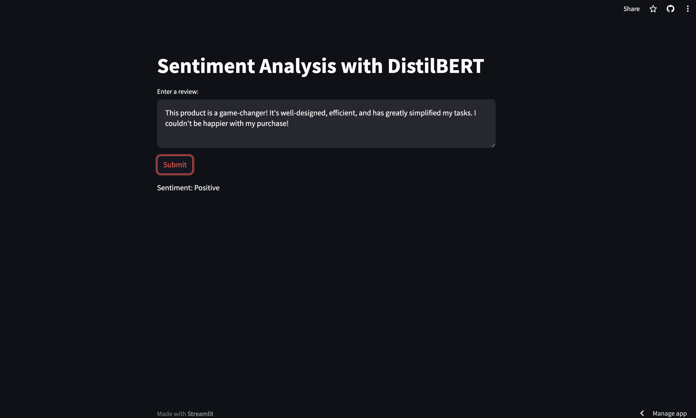
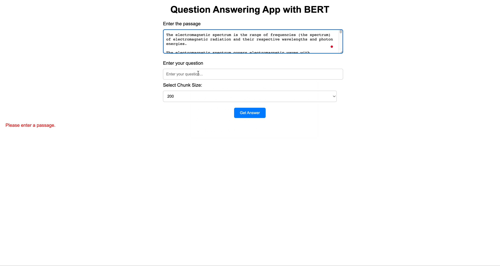

NLP Projects
Sentiment Analysis with DistilBERT + Streamlit
Here we leverage a subset of the amazon_polarity dataset to train two machine learning models: an LSTM model with GloVe embeddings and a fine-tuned DistilBERT model. The LSTM model achieved an accuracy of 80.40%, while the DistilBERT model outperformed with an impressive 90.75% accuracy. Predictions can made in real time via our streamlit app
Question Answering App with BERT and Flask
This project demonstrates a user-friendly web application that uses a pre-trained BERT-based model to answer questions based on a given passage. The app is built using Python, the transformers library for BERT, Flask for the web framework, and HTML/CSS for the interactive user interface.
Sentiment Analysis of US Airline Tweets
This sentiment analysis project aims to classify US airline tweets as positive or negative. It explores both classical ML and deep learning approaches. The LSTM embedded with Word2Vec word embeddings, outperforms XGBoost with an AUC score of 0.9462, despite a slightly lower accuracy. The AUC metric highlights LSTM's efficacy in handling imbalanced datasets.